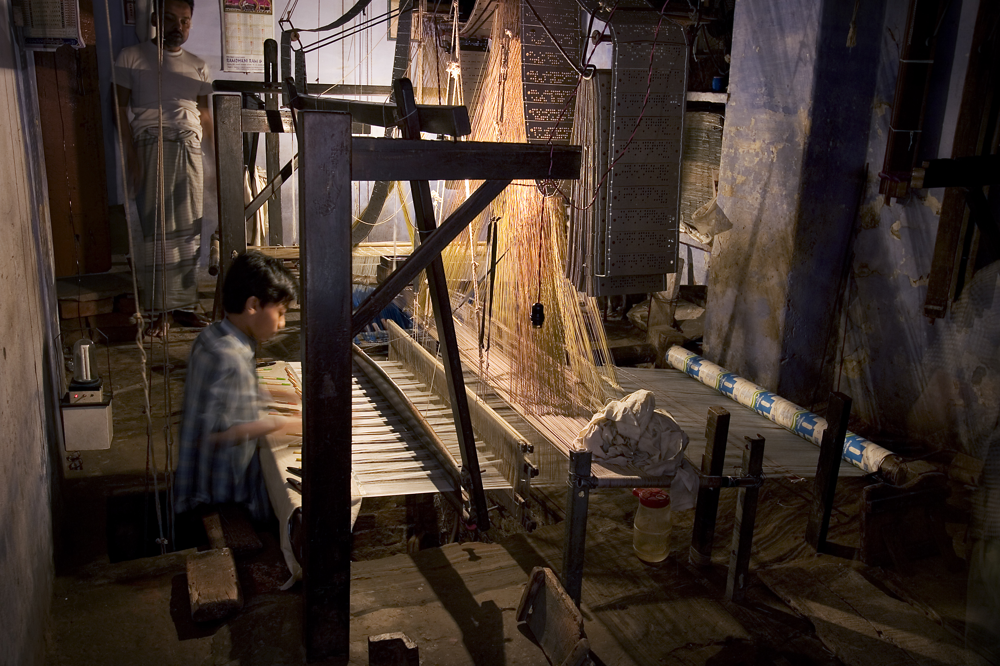

A Legacy Woven from Ancient Whispers
The story of VIRAASAT begins along the ancient riverbanks of the Ganges in Varanasi, where our founders witnessed master weavers dismantling multi-generational wooden handlooms due to the encroachment of synthetic machine printing.
Refusing to let centuries of sacred craftsmanship perish, we pledged to create an authentic couture sanctuary. We brought together fifth-generation weavers from Varanasi, master Chikankari needlewomen from Awadh, and Gota Patti artisans from Rajasthan under a single ethical banner.
"Our name VIRAASAT signifies 'heirloom'. Every garment we craft is an emotional bridge connecting the hands of our ancestors with the dreams of modern women."

Our Mission
To resurrect, nurture, and sustain India's endangered textile crafts by providing generational artisan families with dignified livelihood, artistic autonomy, and a revered global platform. We believe that true luxury lies in the human touch, where every knot and weave carries intentional spiritual resonance.
Our Vision
To be the world's preeminent custodian of Indian ethnic haute couture. We envision a world where luxury fashion departs from disposable fast trends, returning to the reverence of heirloom wardrobing—where garments are treasured across lifetimes and passed with pride from grandmothers to daughters.
Our Couture Philosophy
Three guiding tenets that define every stitch, silhouette, and fabric selection at VIRAASAT.
Slow, Intentional Luxury
We produce small, limited capsule editions. A single bridal lehenga requires up to 400 hours of devoted manual needlework; we refuse to hurry what must be eternal.
Architectural Ergonomics
Grandeur must never cause discomfort. Our pattern masters engineer layered kalis and graded weights, ensuring that even a 32-kali Anarkali drapes with weightless grace.
Purity of Material
Zero synthetics. Pure mulberry, tussar, and Chanderi silks, organic cotton mulmul slips, and real metal zari tested and certified by the Silk Mark Board.

The Four Sacred Craft Techniques
Our ateliers preserve four endangered decorative traditions that were once patronized exclusively by the royal courts of Awadh, Rajasthan, and the Deccan:
1. Hand Zardozi (Agra & Lucknow)
Sewing with gold coiled wires (salma), beads (sitara), and sequins on stretched fabric adda frames.
2. 32-Tanka Chikankari (Awadh)
Delicate white-on-white shadow embroidery involving complex stitches like Tepchi, Bakhiya, and Phanda.
3. Kadwa Brocade Weaving (Varanasi)
Independently engraved floral butas on pure Katan silk with zero loose threads on the underside.
4. Beaten Gota Patti (Jaipur)
Gold and silver foil ribbons hand-cut into floral petals and stitched down with fine silk cord.
Values That Anchor Our Atelier
We believe that beauty cannot exist without fairness. Every VIRAASAT creation is a testament to ethical transparency.
Fair Artisan Pay
Our master karigars earn 2.5x the standard market wage, complete with healthcare benefits and loom maintenance funds.
Zero Child Labor
Strict third-party social audits across all cooperative workshops to ensure ethical employment standards.
Botanical Dyeing
We repurpose marigold temple offerings, madder root, and natural indigo to avoid hazardous toxic chemical runoff.
Heirloom Guarantee
Complimentary lifetime sizing adjustments and zari rejuvenation services for all couture lehengas and bridal ensembles.
The VIRAASAT Journey
Founded with 12 master handloom weavers in Varanasi to produce authentic Kadwa zari brocades directly for private collectors.
Inaugurated our flagship showroom on MG Road, New Delhi, introducing personalized bridal couture and bespoke sizing salons.
Launched virtual couture salons, shipping bespoke bridal and festive wardrobes to patrons in London, Dubai, Singapore, and New York.
Representing over 250 artisan households across four states and unveiling the 2026 Festive Edit to international acclaim.
Master Karigars of VIRAASAT
Meet the venerable elders and master artisans who infuse each thread with soul, prayer, and patience.
Ustad Mohammad Farooq
"When I sit before my teakwood pit loom, I do not simply weave silk; I weave memory. Each Kadwa paisley motif requires my hands to guide the silver zari shuttle independently through the warp. There is no shortcut to perfection."
Begum Naseem Akhtar
"Our grandmothers taught us that Chikankari shadow work should look as soft as morning mist on water. We use zero artificial magnifiers; our fingers gauge tension through touch alone."
Pandit Rajeshwar Soni
"Real Gota Patti requires hand-cutting real metallic foil ribbons into tiny floral petals (tukdi) and stitching them with silk threads so they never tarnish. Our pieces are crafted to outlive three generations."
Our 4-Point Material Authenticity Guarantee
In an era flooded with synthetic polyester counterfeits and copper wire imitations, VIRAASAT enforces rigorous non-destructive laboratory testing before any yardage reaches our cutting table.
The VIRAASAT Provenance Seal
We guarantee lifetime resizing adjustments, fabric preservation counsel, and authenticity verification on every heirloom garment bearing our hand-stitched crest.